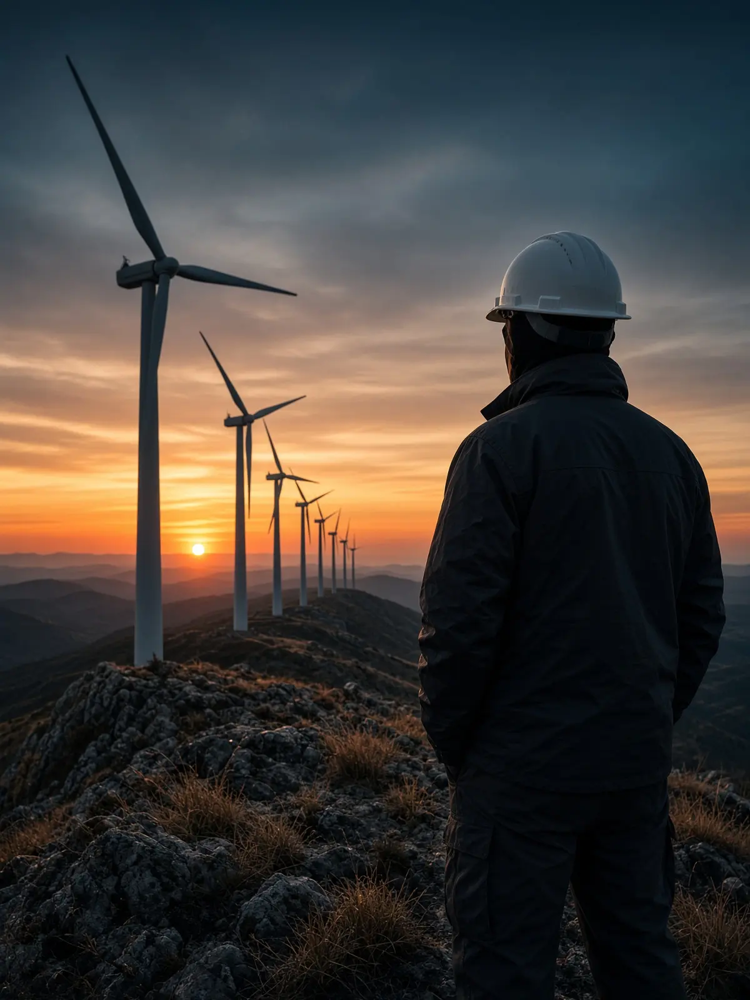
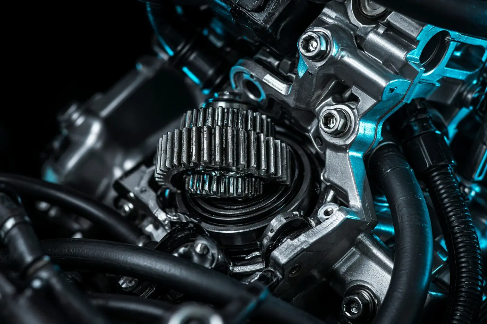

Disponible para nuevas oportunidades
Hola, soy
Álvaro García-Aparicio Rey
Cuento con sólida experiencia en la reparación de vehículos, el montaje de aerogeneradores, la gestión de flotas y el desarrollo de software e inteligencia artificial para automatizar el trabajo técnico. Especializado en electromecánica de automóviles
Taller
Motores
Electromecánica, diagnosis y automatización vehicular
Entrar →
Campo
Eólica
Montaje de turbinas, cableado y trabajos en altura
Entrar →
Código
Informática
Desarrollo web, Python, JavaScript e integración de IA
Entrar →
Oficina
Flotas
Presupuestos, trámites y coordinación con talleres
Entrar →
Pasa el cursor por el nombre y elige un oficio para entrar.
Sobre mí
Más que un perfil técnico, una visión completa.
Profesional multidisciplinar con trayectoria en electromecánica de automóviles, montaje de aerogeneradores, gestión de flotas y desarrollo de software. Uno el trabajo de campo con la visión de gestión y las herramientas digitales, lo que me permite seguir cada problema desde la avería hasta su coste y su solución.
Trabajo con método, doy prioridad a la seguridad y a la calidad y me comunico con claridad tanto con equipos técnicos como con clientes y proveedores.
Experiencia en cuatro entornos distintos: taller, parque eólico, oficina y desarrollo de software. Me adapto con rapidez y aporto desde el primer día.
Diagnóstico metódico: identifico la causa raíz antes de actuar, lo que reduce tiempos de reparación y costes.
He sido el portavoz del equipo técnico ante talleres y clientes, y he trabajado en equipos de montaje en altura, donde la coordinación es parte de la seguridad.
Mido mi trabajo por lo que entrega: máquinas en servicio, vehículos listos a tiempo y procesos automatizados que ahorran horas.

Experiencia
Cuatro áreas, un mismo objetivo: resolver, mejorar, innovar.
Automoción
Electromecánico de automóviles & automatización
Diagnosis, reparación, mantenimiento y adaptaciones técnicas sobre el vehículo. Cuando un paso se repite, lo automatizo para que el taller o el negocio gane fiabilidad y tiempo.
Preguntar por automociónMarchaN
Velocidad0 km/h
Temp.72 °C
También con la barra espaciadora. Activa el sonido para oír el motor.
Diagnosis OBD
Lo que reviso, reparo y mejoro
- P0001Diagnosis—
- P0002Reparaciones—
- P0003Mantenimiento preventivo y correctivo—
- P0004Adaptaciones técnicas—
- P0005Automatización vehicular y de procesos—
Pulsa «Iniciar diagnosis» para revisar cada sistema.

Servicios
Lo que tu vehículo o tu taller gana conmigo
Diagnosis electrónica y mecánica
Localizo la avería con equipos de diagnosis y comprobación eléctrica antes de cambiar una sola pieza: menos tiempo y menos coste.
Mantenimiento preventivo y correctivo
Revisiones, aceite y filtros, frenos, distribución y suspensión para que el vehículo no se pare cuando más falta hace.
Reparación electromecánica
Motor, transmisión, sistemas eléctricos y electrónicos: reparo el fallo y compruebo que no vuelva.
Adaptaciones y automatización
Adaptaciones técnicas del vehículo y automatización de los procesos del taller: citas, presupuestos y seguimiento.
Experiencia en el sector
- Taller de electromecánica: recepción del vehículo, diagnosis, reparación y entrega al cliente.
- Mantenimiento de vehículos de flota de empresa.
- Preparación de vehículos para la ITV.
- Instalación de equipos eléctricos y accesorios en vehículos.
Energía eólica · Plano E-01
Técnico de montaje de turbinas eólicas (electricista)
Montaje de turbinas en campo con el oficio de electricista: estructuras, cableado industrial, trabajo en altura con PRL y verificaciones eléctricas antes de dejar la máquina en servicio.
Mueve el ratón:Desliza el dedo: tu cursor es el viento que mueve la turbina.
- Viento
- 4,0 m/s
- Rotor
- 0,0 rpm
- Potencia
- 0,00 MW
Energía generada en tu visita: 0,0 kWh
Brisa ligera. La turbina arranca a partir de 3 m/s.
- PalaTrabajos en altura (PRL)
- Góndola y bujeCableado industrial
- Torre por tramosMontaje de estructuras
- Armario de controlVerificaciones eléctricas
Preguntar por energía eólica
Modelo simplificado: arranque a 3 m/s, potencia nominal a 12 m/s y parada de seguridad por encima de 25 m/s.
Servicios
Montaje seguro, a la primera
Montaje mecánico de aerogeneradores
Ensamblaje de tramos de torre, góndola, buje y palas, con control de pares de apriete y coordinación con grúa.
Cableado y conexionado
Tendido de cable de potencia y de control, conexionado de armarios y montaje de bandejas en torre y góndola.
Verificaciones eléctricas
Pruebas de continuidad y aislamiento y comprobaciones previas para dejar la máquina lista para la puesta en marcha.
Trabajos en altura con PRL
Trabajo en altura con equipos de protección y procedimientos de prevención: la seguridad del equipo va primero.
Experiencia en el sector
- Montaje de aerogeneradores en parques eólicos dentro de equipos de montaje.
- Izado y ensamblaje de tramos de torre, góndola y palas.
- Tendido y conexionado de cableado de potencia y control.
- Formación en prevención de riesgos laborales y trabajos en altura.
// informática
Desarrollo, automatización & inteligencia artificial
Desarrollo web, Python y JavaScript, automatización de recursos e integración de inteligencia artificial aplicada a un problema concreto: menos tarea manual y más criterio técnico.
const perfil = {
web: ["frontend", "backend"],
lenguajes: ["Python", "JavaScript"],
automatiza: "recursos y procesos",
ia: "integrada en problemas reales",
soporte: true,
};// servicios
Software que trabaja por ti
Desarrollo web
Webs y aplicaciones a medida, frontend y backend, rápidas y fáciles de mantener.
Automatización
Scripts en Python y JavaScript que eliminan tareas repetitivas: informes, hojas de cálculo, correos y datos.
Integración de IA
Herramientas con inteligencia artificial conectadas a tus procesos para clasificar, resumir o asistir.
Soporte técnico
Puesta a punto de equipos, software y redes, y ayuda directa a los usuarios.
Proyectos y experiencia
- Software propio para una pantalla instalada en mi coche, desarrollado con herramientas de IA.
- Este portfolio web, con animaciones interactivas en JavaScript.
- Automatización de informes y tareas administrativas con Python y hojas de cálculo.
- Soporte técnico a equipos y usuarios.
Administración · Gestión de flotas
Administrativo y gestor de flotas
Hago de puente entre los técnicos, los talleres y los clientes: autorizo presupuestos de reparación, llevo los trámites administrativos y respondo los correos que llegan al equipo técnico.
- Autorización de presupuestos de reparación
- Gestión de trámites administrativos
- Ofimática
- Portavoz del equipo técnico
Pasa el cursor por el mapa para ver el estado de cada vehículo.
Presupuestos pendientes
Ejemplo interactivoAutorizado 0 €En revisión 0Pendientes 4
Correo del equipo técnico
Ejemplo interactivoServicios
Una flota bajo control
Control de presupuestos
Reviso cada presupuesto de taller, compruebo piezas y horas y autorizo solo lo necesario.
Trámites y documentación
ITV, seguros, permisos, multas y expedientes de cada vehículo, al día.
Ofimática e informes
Excel, Word y correo para seguir costes, incidencias y vencimientos de la flota.
Comunicación con talleres y clientes
Soy la voz del equipo técnico: respuestas claras y a tiempo a talleres y clientes importantes.
Experiencia en el sector
- Planificación de revisiones, ITV y mantenimientos según kilometraje.
- Coordinación con talleres y proveedores para reducir el tiempo de vehículo parado.
- Seguimiento de averías, incidencias y siniestros con aseguradoras.
- Control de costes por vehículo y comparación de presupuestos.
Hablemos.
¿Tienes una oportunidad, un proyecto o quieres saber más? Respondo a cualquier consulta.
Gracias.
Mensaje enviado. Te responderé lo antes posible. Si necesitas algo urgente, escríbeme a alvarog.fp13@gmail.com.